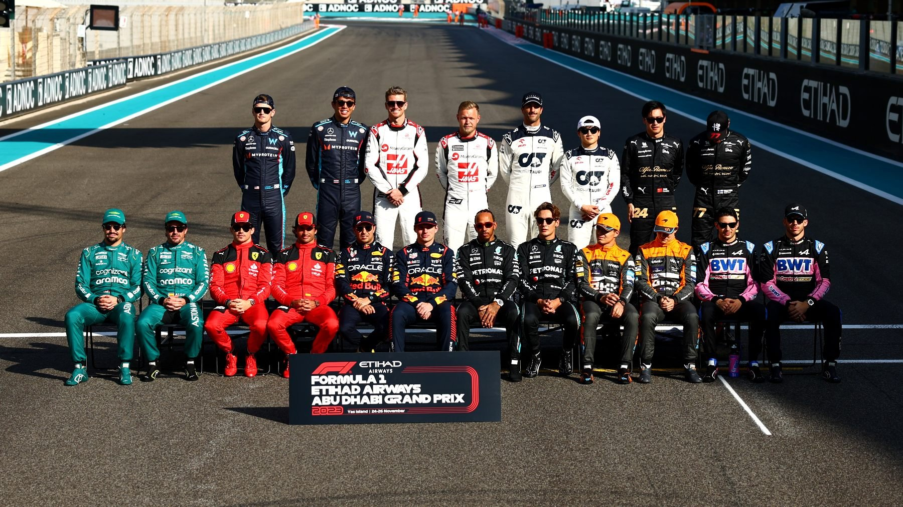

Quando foi criada a Fórmula 1
A Fórmula 1 foi criada em 1950, com o objetivo de proporcionar uma competição internacional para carros de corrida. Ela se tornou o campeonato mais prestigiado do mundo automobilístico.
A Fórmula 1 foi criada para ser um campo de testes e evolução para tecnologias automotivas, além de proporcionar uma disputa de alto nível entre pilotos e equipes.
Os Primeiros Carros da Fórmula 1
Os primeiros carros de Fórmula 1 eram bastante diferentes dos de hoje. O motor, ainda simples, tinha uma potência menor em comparação com os carros atuais. A aerodinâmica era rudimentar, com poucas mudanças nas formas dos carros para melhorar a performance.
Em termos de segurança, os carros não eram protegidos de forma adequada. Não havia dispositivos como os atuais sistemas de segurança e os pilotos enfrentavam riscos elevados.
As Pistas Iniciais da Fórmula 1
As primeiras corridas de Fórmula 1 aconteciam em circuitos de rua e pistas improvisadas, com poucas medidas de segurança. Algumas das primeiras pistas famosas incluem Silverstone e Monza, que ainda são utilizadas hoje.
Os Anos 70 e Emerson Fittipaldi
Nos anos 70, a Fórmula 1 viu um grande aumento na popularidade. Emerson Fittipaldi, um dos maiores pilotos brasileiros, conquistou dois campeonatos mundiais, em 1972 e 1974, marcando uma era de sucesso para o Brasil no esporte.
Os Anos 80 e os Avanços Tecnológicos
Durante os anos 80, a Fórmula 1 experimentou grandes avanços tecnológicos, com a introdução de motores turbo, eletrônica e suspensão ativa. O início da carreira de Ayrton Senna também aconteceu nesta década, mudando a história da categoria.
Os Anos 90 e os Avanços nos Carros
Nos anos 90, os carros de Fórmula 1 continuaram a evoluir, com a introdução de novas tecnologias, como os pneus de perfil baixo e o controle eletrônico de tração. Esse período também foi marcado pela trágica morte de Ayrton Senna e pelas primeiras vitórias de Michael Schumacher.
Os Anos 2000 e os Avanços Atuais
Nos anos 2000, a Fórmula 1 continuou a evoluir, com a introdução de novos regulamentos para a segurança e o desempenho dos carros. Atualmente, o campeão da Fórmula 1 é [Nome do Campeão Atual], que tem dominado as pistas com sua habilidade e tecnologia avançada.